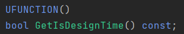
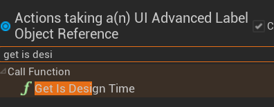

WARNING: The content of this site is still in FIRST DRAFT!
What is this?
When I first started talking to game developers about modding in Unreal Engine, I realised that there are both misconceptions and a complete lack of knowledge of the field. My goal is to inform both developers and modders of all the possibilities that modding can offer. Only known and used methods will be covered, which means that I will not explore potential options that don’t exist yet, such as ones covered in this post.
If you are reading this with a bad perception of modding already, I encourage that you keep an open mind and read at least the overview section before the deep dive into everything there is to know. If you know that you want to add mod support, great! Feel free to skip the overview section and go straight on to the good stuff.
- Buckminsterfullerene
Credits
- Sbsce from Stonebrick Studios for providing cyubeVR’s mod loading code
- Archengius from Coffee Stain Studios for explaining modular builds
- JonasHR from Ghost Ship Games for insight into the internal DRG mod system
- Narknon for having almost every 4.15+ engine source downloaded to provide information quickly
- Members of the Unreal Engine Modding Discord for information tidbits
Where to find me
- Discord - Buckminsterfullerene#6666 (please join the Discord first so I know where you are coming from)
- GitHub
- Epic Games Developer Forums
Versions
- 0.1.0 - 2023-01-20 - Initial release of first draft
- 0.1.1 - 2023-01-21 - Markdown pass, rewrote DLL injection section
Overview
Epic Games have stated in this forum post, that "Unreal Engine 4 has been designed with modding in mind". They then go on to explain that since the engine source is available, and there is great documentation, mods have a lot of potential. While this is certainly true, which you will discover throughout this post, it is evident that even Epic Games have no idea of the true potential of mod support within Unreal Engine games.
Misconceptions
"All mods are cheats!" It depends on the type of game, but generally this is a closed-minded way of thinking. You do not have to look far to see thriving modding communities that have completely changed the game in a positive way. Minecraft is the most well-known example. While they are both "modifications," mods and hacked clients should not be considered the same. I am vehemently against cheating in any game – because like most gamers, I have suffered from games with terrible cheating problems. If mods or methods have any overlap with the potential to be used for malicious purposes, I will discuss it.
I have seen a couple of indie game studios dismiss mods because they think that modders are trying to undermine them by adding features that fit the game’s style to make them look incompetent for not adding such features themselves. While this does have some reason – players may ask for a feature and the developers see that it does not fit the direction of the game they want to go in, thus making players angry – nobody thinks like that. You have got to think, why would someone spend tens or hundreds of hours of their life to create interesting content for a game? Because they are passionate about the game and want to see if they can improve the experience for others.
The most important thing that mods offer a game, is "a second life." If official mod support is enabled for a game, and is easily accessible, it will take a significantly longer time to lose players after development stops, as well as it being more interesting alongside normal updates. The game gets content for free, and in many cases more sales because of certain big mods. I know plenty of people who have bought games because of mods, like flatscreen to VR (Virtual Reality) mods.
feedback loop diagram maybe?
One extremely common and ignorant misconception that I see a lot is something like "mods are bad because they allow you to rip our art/audio assets out of our game." Which is just not true – there are plenty of tools – that are not mods – that make it surprisingly easy for anyone to do, so really there is no hope if you want to stop your assets from being ripped. Asset encryption exists, but of course there is another tool and several methods that exist to crack the key anyway. If modding did not exist, the asset ripping problem would not change. By using an engine with source code available to anyone who can make an Epic Games account, you are accepting this risk.
While I agree that ripping assets from games is a big problem, it is extremely useful when making some mods. For example, if a mod wants to make an edit to a model, they can rip the mesh and its skeleton and use them as a template to edit the model rather than having to remake from scratch. But modders should be aware of the terms of use/legal policies for each game, so developers should make them as clear as possible.
The final thing I want to mention is that there are a few studios that have dismissed modding as an annoyance due to the assumption that players using mods can clog up the crash report stack with mod bugs. This is certainly a problem, which is why it is vital that a system is implemented for differentiating between modded games and vanilla games, in order to filter through crash reports. UE makes the crash reporting system highly configurable, so combined with detecting mods via the mod support system, it is not difficult. In some circumstances, mod crashes have brought light to previously unnoticed, subtle issues with the core game systems, so they can be useful.
Genre of game informs types of modding
There are several factors that informs the type of modding that should be done on a game.
The most obvious thing is what type of game it is. On the one side, if it is a competitive PvP game, should it support modding at all if it could be easy for a player to gain an advantage over others? And on the other, if it is a singleplayer sandbox game, what reasons are there to not add mod support?
A particularly crucial factor is the engine version that the game runs on. Typically, the "best" engine versions for modding are 4.25/26/27, as they have had plenty of time to mature, thus have the most tools developed for them. Typically, any game 4.19+ is moddable to a high enough standard to make it worthwhile, and any game lower than this will require a significant amount more work from community tool developers.
If the game makes heavy edits to the engine source, like many games do, it can make it significantly more difficult to mod.
Talk about switch between UE4 and UE5 maybe?
The Basis of all Modding
Now that the various characteristics of mods have been lightly discussed, I can go into detail about the modding methods that exist, their pros and cons, and how they should be supported. It is vital for the developers to know what the modding pipelines are to best support them.
Pak patching
This is the most fundamental part of UE modding because most forms of modding use it. "Pak" refers to the UE .pak file archive format that it uses to store all the cooked assets for the game. It is where mod assets get loaded into the game from.
Many games will have one monolithic pak file with everything inside of it, but others have "chunks" of files categorised by certain asset types, DLCs, levels etc; whatever the developers decide. This is important to know, because it means that the engine can mount multiple pak files from the Paks/ folder.
So, knowing this, what happens when two or more pak files have assets in the same name and relative path? The pak that is mounted most recently replaces any existing assets. Mount order is decided alphabetically. For example, if we have pak-chunk-0.pak and pak-chunk-1.pak that both contain the asset /Game/BPCharacter.uasset, then the asset in pak-chunk-1.pak will be the asset that is loaded because it "patches" over the top of the asset in pak-chunk-0.pak.
If this is not already enough, UE has a built-in system for giving direct mount priority to any pak files that have the suffix _p in their name.
Modders can combine the above two methods, to always make sure that their mods are loaded into the game. Consequently, the basis of modding is replacing existing assets in a game with edited or entirely new ones.
Finally, it is important to know that custom C++ classes cannot be loaded into the game using pak files, since they are only for assets. But that is not such a big deal as you might initially think, which will be explained in the Blueprints section.
Dealing with Paks
To get access to the assets inside of a pak file, modders will need to unpack it. There are plenty of tools that can achieve this, although if a modder already has the correct engine version installed (which they can find out by right clicking the game’s binary and looking in the details tab) they can call to the UnrealPak utility by command line or batch script.
Once modders have created their edited or new assets, they need to pack only the assets they intend to be replaced, back into the pak file, again by calling the UnrealPak utility.
The quality of the modding experience can differ depending on what packaging settings have been defined in the game’s project, but obviously the people responsible for these settings need to weigh up these settings with their own circumstances:
| Name | Engine versions | Default | What ON does | What OFF does | Optimal |
|---|---|---|---|---|---|
| Use IO Store | 4.25+ | OFF for 4.25-4.27, ON for 5.0+ | Produces .ucas/.utoc file types within the pak file, which are difficult to work with and requires considerable extra work to get them loaded into the game like normal formats | Produces .uasset/.uexp files within the pak file, which are the easiest to work with | OFF |
| Un-versioned Assets | 4.25+ | OFF, ON for 5.0+ | Removes version signatures from asset headers. Makes them difficult to mod, as asset parsers depend on reading the versioning information in the headers for deciding on how to parse them | Keeps version signatures in asset headers | OFF |
| Event Driven Loading | At least 4.17+ Check | ON | Produces the .uasset/.uexp files and is highly suggested for the best modding experience | Produces only the .uasset files | ON |
| Blueprint Nativization | At least 4.17+ check | OFF | For any blueprints that are added to the whitelist, and every userdefinedstruct/enum, their code is "decompiled" to C++ rather than bytecode as an asset, which means that the blueprint cannot be "viewed" by modders with any tool | Cooks blueprints as .uasset files | OFF |
| Generate Chunks | At least 4.17+ check | OFF | Combined with allow ChunkID assignments asset action being on, it packs assets into specified pak chunks. This makes lives for modders more annoying than anything because having to unpack multiple chunks is a pain and can become messy | Packs everything into one pak file | OFF |
| Use Pak Encryption | At least 4.17+ check | OFF | Requires an encryption key to be generated and that key must be provided when unpacking the pak. Modders can use tools and a bit of brute force to obtain these keys, but it can be annoying if a game does not need it (I.e., not a game where mods can be used to gain an advantage over others) | Pak file will not be encrypted | OFF |
The files that are stored in the .pak files are cooked. This means that they cannot be copied into a UE project and edited inside of the editor. There are a few exceptions, for example data tables and string tables – and to do that you need a couple of configs – but it’s only really useful for basic data mining.
Asset editing
As you know, Unreal Engine is open source, meaning that anyone can look at the code to see how certain systems work to try and reverse them. This is precisely what happened with the various cooked asset formats (.uexp, .uasset, .ucas, .utoc, .umap etc.) and several tools have been developed to make exploring, parsing, and editing these files as easy as possible.
The most basic form of asset editing is just changing the default values of primitive variable types like strings, floats and booleans. It can be done on every engine version by all asset editing tools. A typical use case would be changing the damage of a weapon.
The next level up from that is changing references to classes and objects, for example switching a component on an actor from one asset to another. Asset editing can go much further with super advanced techniques, but you get the point.
There is also localization editing, where the localisation files, that have the extension .locres, are edited, since that is usually where many of the games’ strings are kept. This is handled by a separate tool.
Asset editing is the most accessible method as many tools and documentation exist for it, but it is also quite limited without getting really technical.
Audio
The quality of audio modding is heavily influenced by the sound system that your game uses. The best system is the default UE sound system that was introduced in UDK (UE3). There are also the FMod and Wwise middleware that many games use, but frankly, they are rubbish. They are limited and a pain to mod since they are closed source and use propriety formats. I get them being used by non-UE games or games developed before the UE sound system existed, but any new games using them baffles me.
The extent of modding games using WWise or FMod is just by directly replacing the audio files. There is nothing more modders can do, without using blueprints.
Audio modding for games using the UE sound system has a slightly higher bar than asset editing, in that modders need to install the version of Unreal Engine that their game uses. The general pipeline for all audio mods, is recreate the audio asset with the same path and name inside of an Unreal Engine project with the desired changes, then cook and package from UE into the pak file.
There are 3 methods of audio modding for games using the UE sound system:
-
Directly replacing sound waves. Modders can import their .wav/.ogg audio file into the same name and location as the original they wish to replace
-
Replacing sound cues. If a modder recreates a sound cue in the same name and location as the original, they can:
-
Make their own sound cue graph
-
Use as many custom sound waves as they want
-
Use custom attenuation, concurrency or submix settings
-
Recreate other referenced assets in the original, such as sound class, and reference them in their new cue. This is a vital component that modders should follow if they want their mods to be able to be controlled by the game’s audio sliders, ducking and other systems controlled by those assets
-
-
Replacing other audio asset types, like making custom sound class or submix hierarchies, replacing attenuations, sound curves, etc.
If you want to get an idea of any of these methods, you can have a skim through the audio modding guide for the game Deep Rock Galactic. The examples use that game, but every technique is transferrable to any other using the UE sound system.
As you can see, all audio modding is, is just replacing existing files. If modders want to use audio in more advanced contexts, like adding entirely new sounds to places that do not already have them, then they must use blueprint modding, explained later.
Visual (textures, models, animations)
This is by far the most popular kind of modding. If a game’s files can be unpacked and mods loaded with normal Pak patching methods, it is almost guaranteed that visual modding can be done on it. They can be low effort or very complex, high effort mods or anything in between. They are also client-side only, which means that they can usually be loaded without the server knowing and thus won’t affect the other players (unless created with malicious intent, e.g., making world models transparent).
The process for most visual modding for the longest of times is opening UE Viewer (also known as UModel) and exporting the texture/model/skeleton/animation from the cooked assets, into a format that can be imported into Blender, 3DSMax or whatever other software that is being used.
If the modder wishes to import the asset into UE, they will need to use another tool to export from their software of choice into FBX. In order to replace the asset, they must import into UE with the same name and location as the original and then they can cook and package their mod.
In 2022, there were tools such as this Blender Plugin popping up that allows models/animations/skeleton .uasset files to be imported directly into Blender. Modders can then make their edits and export the asset straight back to the .uasset format and replace the original in the game. This is ground-breaking because it no longer requires anyone to install Unreal Engine to make model edits.
If you wish to know more about visual modding, there are plenty of videos and guides out there that explain the various methods and processes in greater detail.
Blueprints
Blueprint modding is the most accessible form of "advanced" modding, in that modders can create new assets and write code to produce mods that do more complex things. It also happens to be the easiest technique to directly support, which is discussed in the Mod Support section.
Blueprint mods can do everything normal UE blueprints can do, which means that at an absolute minimum, there are a lot of possibilities. There is an exception to this however – any modules of the engine that are stripped from shipping builds of games will not work when accessed by blueprint. For example, the cheat manager object is stripped by default (for obvious reasons), so any calls to the cheat manager will not work.
References
Blueprints can get references to any asset in the game as well as any C++ exposed to blueprints. This is especially important, because references are just strings that point to the package name of an asset or exposed C++, where:
/Game/is an asset inside of the Content folder, e.g.,/Game/Blueprints/BPCharacter/Script/is a C++ class, e.g.,/Script/ACustomCharacter
Which means that references are persistent when cooking and packaging, therefore allowing "fake" references to be made, and then when the blueprint is loaded into the game, it will reference the real, unchanged asset.
To make the fake reference, you guessed it, modders can make the asset in the same name, location, and type as in the game and reference it in the blueprint. This is coined as "dummying." It will work, as long as they do not pack the dummied asset into the mod, otherwise it will replace the original and cause issues.
With this concept now in mind, faking references can go much further. Modders can dummy properties, functions, delegates, components, and events inside of the dummied asset, which they can then access from their mod blueprints. The following two images show a widget that has had a few properties and events reconstructed so that they can be referenced in a mod blueprint.

Reconstructed properties inside of a widget
{kind=link}
Calling these properties by reference of this asset
But still, this concept can be pushed even further. Can you dummy the blueprint exposed C++ headers that the game has? Absolutely. Every single function exposed with UFUNCTION, every property exposed with UPROPERTY, enum with UENUM, struct with USTRUCT and class with UCLASS, can be dummied in the project and accessed from blueprint.
{kind=link}
Some header code reconstructed for a custom User Widget class
Remember when I said that C++ classes cannot be loaded into the game using pak files, but it is not that big of a deal? This is why. If you want modders to be able to access as much C++ in your game as possible, expose it all to blueprint! Of course, there is a minor performance impact, and compiling the game takes longer since there is more work for the Unreal Header Tool. So, there is some weighing up to do with code that you care about performance overhead for.
Not only are your own C++ headers able to be dummied, but so are any plugins that your game uses. So, depending on which plugin options you have enabled, blueprint mods will be able to use any exposed plugin code. While it does not change any functionality, modders could choose to download the plugin’s source, if readily available, and insert it into their projects. Depending on the plugin, and what they are trying to do, they could then test any blueprint code using the plugin, in-editor, saving them from having to cook, package and test in-game.
So, as you can see, blueprints are extremely powerful tools for creation. Any blueprint code that developers can produce, modders can also produce, if they wanted to.
Force reflection
But, unintuitively, modders can access more C++ in their blueprints than developers. This is because the flags that UHT definitions are purely used to control how much data is viewed in the editor.
Let’s say that a UFUNCTION in the game ‘X’ has no BlueprintCallable flag. In the X's UE project, developers will not be able to find the function in the node menu. However, if modders recreate the header for X in their own project, and give it the BlueprintCallable flag, they will be able to see the function. Most importantly, the function will work in-game.
| What is set in X’s actual project | What modders can do in their recreated project |
|---|---|
|  |  |
 |  |
{kind=link}
{kind=link}
As a reminder, if the game has no UFUNCTION() macro above something (i.e, it is not reflected), then the modders will not be able to use it at all; this goes the same for any other reflection macros.
Luckily, there is a tool that dumps all the C++ headers in the game into UHT format with all their corresponding flags and generates a new UE project based off these headers. You can find the repository and wiki page for that here.
How blueprints are loaded without mod support
Without official mod support, it is quite difficult to load blueprint mods. Modders are not able to simply replace any asset with a mod blueprint since it likely needs to be loaded all the time, and they would also have to reconstruct 1-1 the blueprint and its code that they replace so that the game does not crash. Unless the asset is basically empty (thus easy to reconstruct correctly), this is just not possible for most.
So, how do they do it?
You have almost certainly heard of a mod loader. There is usually one for any community developed mod support for most games on most engines. They are not the same as a mod manager. A mod loader is as it is named – it loads mods.
In Unreal Engine, the methods used can vary, depending on each game, their engine versions, engine modifications, etc. Here is a high-level overview of the most common methods, in order of difficulty:
-
Completely replace an asset that is always loaded and does not do anything important, e.g., a credits widget in the escape menu
-
Using a "game generic" mod loader that hooks into a common UE function using DLL injection and loads blueprint actors
-
Edit an asset (using an asset editor) that is always loaded, e.g., a HUD widget or a map, to add "code" that loads a blueprint actor that has all the mod loading code inside of it
Once any blueprint or widget has been loaded with custom code in, the mod loader can then go about loading any other mods that maybe are within a certain folder in the asset content, using normal UE asset registry functions.
For example, a mod loader may require blueprint mods to be inside Content/ModLoader/YourModName/InitBlueprint, inside of their UE projects before they cook & create their pak file. That way, in the mod loader's code, they can just check every subfolder in /Game/ModLoader/ for the InitBlueprint actor and spawn that.
As you can tell, the need for natively spawning blueprint mods is top priority. Luckily, it is quite easy, but that is explained in the "Mod support" section.
C++
C++ modding is natively allowing C++ code to be run by the game. While this is by far the most powerful viable way to mod games, it is also dangerous as allowing uncontained C++ could allow malicious code to run. It is not nearly as easy for blueprints to be malicious as they do not have file I/O or web sockets support, unless explicitly provided by the developers or a plugin. You could introduce a special protocol for C++ mods to be uploaded e.g., by running all mods through Virus Total, or requiring that the source code is kept open source, etc. But it’s entirely up to you how you want to handle the risk if you choose to go down this otherwise excellent route.
To best provide C++ support, there are two methods:
- Providing an API
- Building modularly
Later, in the case studies section, I will go over examples from cyubeVR that provided an API and Satisfactory that built modularly.
Providing an API
If your game heavily leans on C++ code and exposes very little to blueprint, providing an API could be a good option. The usual method to go about doing this would be to produce a template C++ project with all the functions that the game calls/exposes inside of it. Modders can then add their code inside of the functions, build the DLL and the game will call to the DLL during runtime. For example, the project could have a Tick() function that runs the code inside of it every tick.
The downside to providing an API, aside from the security issue I mentioned earlier, is that if you want to provide any UE-specific types, you will have to reconstruct them inside of the template C++ project manually. But that may be legally questionable, by the statement of the Unreal Engine EULA section 4.a.i.
This could be extended to providing a general scripting system API, such as Lua, but still has the same downsides.
Building modularly
There is a native feature in Unreal Engine that few people know about, called Gameplay Modules. It is where classes sectioned by module are compiled into DLLs, rather than one monolithic binary. I won’t bother condensing what is already explained in the UE documentation for it, since it is already quite short.
If a game is set to build modularly instead of monolithically, it can then load any other DLL inside of the Plugins/ folder, even in shipping builds. A modder can then create a C++ plugin inside of UE, where the entire core UE API is exposed, and they can load it as a "plugin mod" into the game. The plugin can do anything the game’s normal C++ can do – reference, change or create assets. For this reason, this method is by far the most flexible and opportunity-inducing out of any in all of UE mod support.
There is only one game that I know of that has ever used this method for community mod support – Satisfactory. Therefore, I was able to ask the developers of this game – Coffee Stain Studios (CSS) about any drawbacks that they observed:
- Increased code size. In fact, executable size is decreased to nothing, but you get quite a lot of relatively small DLL files instead.
- Slightly increased start-up time and memory footprint. Don’t expect any numbers there, but "it’s really insignificant", according to CSS.
If you have not made any significant commits to the engine for your game, the bare minimum you can do to change to modular is changing LinkType = LinkType.Modular in the game target.
Then future actions depend on the severity of the changes. Changes that are binary compatible with the stock engine do not need to be shared. If there are changes affecting binary compatibility – e.g., adding new properties, changing or adding virtual functions – they need to be shared with modders. The only legal way to share your engine patches is to fork the UE repository on GitHub and commit your changes to the fork. But if your changes are binary compatible, you can potentially skip that.
If you would like to know more about this method, I highly recommend reaching out to the Satisfactory developers and asking them directly.
DLL Injection
This method is used by modding tools rather than mods themselves, with a couple of exceptions. Injection is either done by using a DLL injector or by proxy injection using the DirectX DLL xinput_3.dll.
In a nutshell, for a program to hook into a game, it needs to find the address of the function it wants to hook into. This is done by searching for an "array of bytes" (AOBs) that is unique to the function.
However, since games use different engine versions and have their own custom engine implementations, the AOBs that the tool will try to find for a specific function can change. So, it may be up to the user of the tool to locate the AOBs for the game they are trying to inject into.
Some other things that can cause bytes to change include compiler and compiler version, compiler flags and build mode (debug, shipping, etc).
Yes, there are "mods" or tools that use this method that are specifically designed to enable cheating in games, and I condemn those. However, it is still extremely important for modding tools because these programs can provide so much useful information about the game.
The types of tools that use DLL injection usually fall into a few categories:
-
Console unlockers – re-enables the in-game console if it has not been stripped from the game completely and allow unstripped commands to be entered like normal
-
Free camera – allows the player camera to be detached and "flown" around the level
-
Dumping object memory – produces files of internal object information such as reflected C++ headers and blueprint bytecode. This is by far the most useful for tool developers
-
Mod loading – mounts pak files and loads mod blueprint actors
Mod Support
Based on what has been discussed, there are 5 major tiers for mod support, in order of increasing difficulty:
- Natively mounting mods during game initialisation
- A mod management system
- Release an SDK/mod kit, document, or information on internal systems to aid modders create more high-quality mods faster
- Providing a scripting API
- Enable plugin modding by changing the game build type to modular
Since I’ve already covered tiers 4 and 5 earlier, I will now cover tiers 1 – 3 in more detail.
Natively loading mods
To natively load mods, there are a few options:
- Using a marketplace Pak loader plugin (optimal)
- Using the SimpleUGC plugin
- Writing your own system
You will also need to produce a standard for blueprint names, install folder hierarchy and naming, that you must communicate to modders to conform to, but I will discuss this later.
This does not just apply to blueprint mods. You can still use it to mount and load in assets for the other modding types like audio, asset editing and visual. Since you are mounting every asset inside of the pak file regardless, any asset replacing an existing one will still work in the same way as the normal Pak patching method.
Pak loader plugin
The first option that I suggest is using this Pak loader plugin because it does pretty much everything you need to do for you. It only costs roughly $20 but the main reason you may not choose this option is due to it not being supported on your game’s engine version.
The plugin allows you to mount pak files from any file location. You can then spawn specific actors from within the pak file via a bit of blueprint code.

Example code for the overall mount process
{kind=link}
Example code for mounting a pak file

Example code for spawning a mod actor of a specified name
The above images show all of the code responsible for loading mods in the game cyubeVR. The only part that had to be written in C++ was the function Get Mod File Paths which scans the Mods folder for the mod actors that it needs to load.
So, in order to use this effectively, you should first establish what parameters you will require modders to use to load their blueprint mods.
Every time a new level is loaded, the game will need to reload the actors anyway, so this is a good opportunity to also reload any mod actors. To give finer control to modders, I suggest that you require a new actor per level to be provided.
For example, if you have 2 levels – main menu and the world level, you can require modders to have a blueprint actor called InitMenu and an actor called InitWorld to load their mods. If a modder wanted their mod to only load in the world, then they only have to make and put code inside of their InitWorld actor. The "Init" part is just short for "Initialize" - keeping names short saves time and cuts back on potential headaches where spelling mistakes are made.
The downside is that if your game has a lot of levels, it would be annoying, so another option is to require one actor and provide modders with a C++ reflected blueprint function (so that modders do not need to download any files) that checks for the current level name and continues execution flow if it is a level that a modder wants.
SimpleUGC plugin
The "Simple User Generator Content" plugin was originally developed by Epic Games for a mod kit for the VR FPS game Robo Recall by Epic Games. I know a couple of games that use it, except that they both had to heavily modify it just to fit their needs, which are mostly met by the marketplace Pak loader plugin I talked about previously.
SimpleUGC’s way of handling mod files is ignorant of the fact that we can just dummy reflected C++ headers and use them, and you don’t even need to specify the category of "user generated content" in the macro. There’s no point in having it when everyone can use every reflected C++ header in the game regardless of the category or macro flags.
Additionally, their system with the MakeReplaceableActor component is redundant because modders can replace anything by placing the same asset type in the same name and location as the original asset, as I have explained previously. So, since we can just do it for everything anyway, it will save a ton of work not having to add that component for everything that you "want" to be replaced.
The need to create a custom game instance makes modding unnecessarily difficult for modders. If something is not loaded by the normal game instance, then it may be on the UGC asset registry, so modders will need to know to do additional checks for that as well. It is a small thing, but yet another cause for potential headaches further down the line.
But the main reason I do not like this plugin is that it requires the developer to produce a "mod kit" just to allow modders to actually create their mods within UEE. This mod kit is not related to providing any game assets to aid with modding itself, but rather framework files. The best step is no step - it is not ideal as it increases the bar for modders and restricts what can be done.
The plugin may work for you, but to be honest it’s a lot of extra work than needs to be for both sides and if you do end up modifying it, you’re way more prone to annoying crashes and bugs that makes good mod support harder to reach. Of course, I recommend that you still explore this option yourself; don’t just take my advice and run with it.
Do it yourself
Since the engine core API exposes many utilities related with pak mounting and such, it isn’t really all that difficult to implement your own solution. The Pak loader plugin primarily builds upon the FPlatformFile & FileWalk APIs which is a good point to start at.
If you need something really bespoke, maybe more flexible than the other two methods, this is probably the path you should take. I’ll talk about it in more depth later, but the game Deep Rock Galactic had a requirement for being able to “hot reload” mods during runtime, which is not possible without writing engine modifications yourself.
Be aware though that any DIY solution is prone to more subtle issues that people may not notice for a long time but may cause a lot of issues. For example, in Deep Rock Galactic, there was a bug in the hot reload system where mods were not always loaded in a consistent order and went undetected for a long time. When it eventually surfaced, modders realised that it was the root cause of other issues they were having that they couldn’t explain.
Folder hierarchy
Obviously, you need to be able to assign mod actors to mod names/IDs, so a good folder hierarchy is important. My suggestion is that you put a Mods/ folder inside of <GameInstallFolder>/<GameName>/ and then inside of that, split up each mod by a folder with the name of the mod. Inside of that folder is the mod files, including the “Init” blueprint actors that you are scanning for to load.
If you know your game will upgrade to new engine versions and/or make significant code changes in the future, it may be in your best interest to have that includes mod information within it. With this I mean, you could require a "descriptor” .txt/.uplugin file in the mod folder name to inform the game version that it currently works on.
Then your mod mounting system can include reading that for detecting whether a loaded mod will have compatibility with the current version, the mod author, mod version, mod description, etc. All things that you can show in the mod browser in the game. If your game already calls this data from an API when it downloads subscribed mods on a 3rd party site, then you can ignore this step. If you decide to use a system like this, make sure that you communicate what is required with the modders!
Finally, you may want a dedicated location for mod saves to be stored. Since modders have access to the same “save object to file” blueprint node that you have – where the root directory is <GameName>/Saves/ - you can’t really control within that folder they go, unless you write your own function for that. Since you should be communicating everything to your modders anyway, you may choose to require that mod saves are stored in <GameName>/Saves/Mods/<ModName>/ although there still isn’t anything stopping modders from not conforming to that. Unless your game is doing something special, it shouldn’t matter if mod saves are all mixed up in one directory.
To put all this together, let’s run through an example. Say there are two mods installed. The mod hierarchy could look like this:
{kind=link}
Example mod folder hierarchy
Unless you have changed it, your Saves/ folder will be in %appdata%/Local/<GameName>, which of course is also fine. In this example I have chosen to change the Saves folder to the game install location, which some games do.
In this example I have chosen to use a .uplugin file to store the mod information. You may prefer this, as the format of the .uplugin is JSON which means that a template can be provided for modders to use. Importantly, it almost eliminates the risk of mistakes in the file since it is obvious where information goes. I reiterate that it is indefinitely vital to remove potential points of failure for the lowest bar possible. An example of this could be:
{
"ModName": "Time Control",
"Description": "Allows the user to control the global time dilation.",
"Category": "Gameplay",
"CreatedBy": "Buckminsterfullerene",
"ThumbnailImage": "https://3rdartymodmanger.com/GameName/mods/Time%20Control/Thumbnail.png",
"GameVersion": "1.37",
"ModVersion": "1.0",
"Dependencies":
[
{
"ModName": "ModLib",
"ModURL": "https://3rdartymodmanger.com/GameName/mods/ModLib",
}
]
}
Mod managers
Arguably, having a good system for users being able to manage mods is just as important as having good mod support systems.
There are 2 main components of mod managers; the part within the game itself that lets users view their subscribed mods and toggle them on/off, and then the 3rd party webserver that users subscribe/browse mods on.
The integration can vary greatly depending on the game and there is no one "preferred" method by modders so there is not much to advise upon. I suggest you just do your own research since there is a lot of material and help available around already.
Mod browsing
While both parts could be integrated into within the game and managed by your studio's own servers, most games stick with keeping the mod browsing to a 3rd party system.
The most common systems used are Steam Workshop, mod.io and Nexus, although the latter is not recommended for official mod support, since content is moderated not by developers, but by Nexus staff.
Personally, I really like mod.io because they do a lot of the heavy lifting with moderation tools, a strong API and flexibility for every game, even if they’ve had a rocky last few months with their v2 website.
Managing mods in-game
Typically, games will have a subcategory in the main menu for managing mods. In this window, the game should display subscribed and/or downloaded mods with their name, description, thumbnail, author and version pulled from either webserver API or a descriptor file within the mod download.
Providing a shared mod settings window
Something that many games do not have however, is a "shared settings window" for mods. If a blueprint mod wants to be able to get user input with widgets such as buttons, sliders and text boxes, they need to figure out how to create their own widgets and manage the mouse cursor, layering, controls, etc. But if a game can provide a central widget for mods to interface with, settings for each mod can be placed in one shared window that makes sense. Since it is part of the game, developers can make the window fit the style of the game, and work seamlessly with their other menus.
A solid way to implement a system like this is to provide a collection of interfaces in a folder that could be part of your mod kit, if you have one. Modders can interface their blueprint mods and settings widgets with these interfaces, which once in-game, reference the actual management code for placing the settings widgets into the menu.
Here’s an example of a shared mod settings window that modders created for the game Deep Rock Galactic:

In-game menu for mods

An example mod using the mod hub's interfaces
I’ve ported this to be game-generic, which means that any modding community can take the source code and edit it slightly to work with whatever mod loading method they are using. You can find the link to its source here, if you wish to see how exactly it works.
Mod kits/SDKs
If you want a thriving mods community, you should provide tools to make things either possible at all, or just easier. While community created tools can cover many bases that developers won’t, it always makes sense for official tools to be created.
While I create mod kits for multiple games, I can see the scenario where I get burnt out and stop maintaining my tools. Even though I try to document as much as possible, if no one picks up the slack, entire modding pipelines can grind to a halt or be reset to square one. If the developers created official mod kits, there is an obligation to keep things maintained and documented clearly so that the next developer can continue the work.
But what sort of stuff could modders expect in a mod kit?
-
The game’s C++ headers (.h files). Modders can get all reflected headers themselves, but it is always worth more to have the ones from the developers with any comments explaining what they do/are for
-
A "middleware" interface consisting of reflected C++ headers that allow blueprints to interface with an internal C++ system (such as a bespoke tech tree system) or a paid marketplace plugin (such as the voxel pro plugin). This is highly sought after as developers can:
-
Avoid using C++ modding which may pose a security risk
-
Control exactly which parts of a system mods can access, and how
-
Provide the ability to mod previously "unmoddable" systems e.g. a plugin without reflected headers, so couldn’t be accessed via blueprints
-
-
Code for the game’s engine fork if it has one. The best way to do this would be to have someone make a fork of the UE source code on GitHub and then upload their edits to that as a mirror of their own project’s one. Due to the UE EULA, the engine source MUST be distributed via an Epic Games verified path, such as a fork of the engine or via the marketplace
-
Custom in-house plugins and/or editor utilities that offer functionality that can’t be found anywhere else. Obviously, paid marketplace plugin source cannot be shared without permission from the author
-
Certain assets (ideally all of them) like blueprints that modders could modify directly in-editor. Modders can technically already obtain these from parsing cooked uasset files, but it is a lot of work and can be error prone
-
Following on from the previous, animation assets such as animation sequence and skeletal mesh. In FBX format, if possible, but as uasset can suffice too. This saves a bunch of time ripping the assets from the game using various tools, which can also be wrong when a game uses a different forward axis for skeleton bones or other things
In our dreams, we can get the game’s UE project as a download with all the C++ and assets, but obviously, that is not something anyone expects... except that it is partially possible due to some community made tools, that I will describe in the next section.
Creating good "conditions" for modding your game
Aside from mod kits, there are a few ways you can improve the quality of mod support:
-
C++ enums cannot be edited, so use user defined enums where possible, or not at all
-
Make as few major engine edits as possible – if you do, and you need to distribute your fork to modders, it doesn’t stop being a huge pain
-
Don’t hardcode values in your C++. This is a bit of a no brainer, but you’d be surprised how much I’ve seen games do this
-
Use data assets where possible – they are very easy to edit/add to/create frameworks from, and they make general project quality clean
-
Add plugins to game project on request, e.g.,
SteamVR/OpenXRif modders want to make a flatscreen to VR mod -
Provide nice blueprint functions in a C++
BlueprintFunctionLibrarysuch as reading/writing strings from/to files (and making it clear what path roots are)
UFUNCTION(BlueprintCallable)
bool WriteToPlainText(const FString& Filename, const FString& TextContent, FText& OutError, bool Append);
UFUNCTION(BlueprintCallable, BlueprintPure)
bool ReadFromPlainText(const FString& Filename, FString& OutTextContent);
Community Modkits
Since the engine is open source, it is not unreasonable to expect that modders can reverse a lot of things about the engine. Despite each version producing its own set of new challenges, the work of a handful of people has made a lot more possible. If you don’t want to provide any asset or header mod kits, it is highly likely that modders will produce one for you regardless of what you want. Of course, it depends on the conditions of modding, such as those settings covered previously, or engine version.
C++ Header Template Project
It is now trivially easy to create a full project of reflected C++ headers. It typically takes me under an hour to create and fix the errors for a C++ project for a new game. But that should not be any concern for you, as it was always simple to "dump" the C++ headers, but just not in this specific format.
Here’s an example for Deep Rock Galactic, another example for Astro Colony, and the source code responsible for generating these.
Full Asset Content Project
As you may know, it is not possible to just copy most cooked asset files directly back into the editor as they will cause crashes and you won’t be able to open them. There are a few exceptions where UE has code that "reconstructs" them – sound waves, string tables, data tables, static meshes (partially) and textures. Data assets are only reconstructed by the engine when they are duplicated in-place and then saved, and blueprint hierarchies can be obtained by creating a child BP of a cooked one.
But what if we could write code that took the parsed data from the cooked assets and generated raw assets in-editor? After all, information about every asset is stored in its cooked format, except for shaders, which is stored separately in the global shader cache file. And since we can generate the base C++ classes for these assets, we aren’t limited by that aspect. Modders have been reconstructing assets by hand from reading the same data for a long time, so why not automate it?
Over the last couple of years, myself and a few colleagues have been working on a tool that can do exactly this. At the time of writing, we can support all the checked asset types:

List of supported asset types that can be reconstructed
"Simple assets" are those with only hard coded values and references, such as data assets, sound classes, and some custom asset types. Any asset types we cannot parse, we produce them empty so that the other assets still get them as references.
We cannot fully reconstruct materials, since most of the data is stored in the global shader cache file, so we just populate with the data we can get, and the rest must be reconstructed by hand if a user wants to.
Although it is possible, we cannot reconstruct any blueprint graph code currently, as it is extremely difficult.
Here’s an example demo video for the project that I generated for Deep Rock Galactic. I have generated one for many games now, however I always ask for permission from the developers before distributing. I have been denied distributing for the game Hydroneer, which makes sense, because the entire game has just a small handful of C++ classes and the rest is blueprints which may be fully reconstructed at some point in the distant future.
This tool is open source, and we have made extra sure that it does not break the UE EULA - but we won’t be able to stop people from using it to break EULAs for the games they generate assets for. That being said, the tools are not exactly easy to use, as it took me about 3 months just to generate the first batch of assets for DRG, which was still broken in many ways.
Case Studies
Since I have modded and made tools for many games, I think it is important to share what methods specific games have used, what their ups and downs are, and what I have learnt from working with them. Be aware that this section is a bit of a knowledge dump from me so I’m not going to be upset if you decide to skip it.
Satisfactory
Satisfactory is a primarily singleplayer automation game. This lends itself to modding. Luckily, the developers recognised this and released the game with PDBs, despite it doubling the download size. The PDBs provided allowed for a community mod launcher to be made very early on.
In 2021, Satisfactory became the first UE game that I know of, that switched to the modular build type. It was by the modders’ request, and it took them roughly a year to make the switch after internal testing alongside normal development. As discussed previously, it allowed for C++ mods to be loaded as plugins which instantly boosted the possibilities of almost endless to literally endless, while also making the viability of complex mods possible due to the increased efficiency.
Therefore, the community could heavily expand their mod support capabilities. They created their own 3rd party mod browsing website, which was interfaced by a mod launcher that could manage mods, find new ones, etc. It then installs selected mods ready for the game to be loaded.
Additionally, since the mods are plugins, they can interface directly with the UE core C++ API, meaning that they could easily dump all the information about the C++ headers and assets in the game and produce their own mod kit for modders.
A downside to this, as discussed, is security. Giving people the ability to upload uncontained C++ that is executed can be very dangerous, which is why all mods uploaded to the site are ran through VirusTotal. As far as I am aware, in the last few years, there have not been any incidents.
Although the developers intended on official mod support from the first launch of Early Access, it is clear that the community’s system is so strong that they don’t need to do anything themselves, aside from providing help with internal information, and the changing of the build type to modular obviously.
ARK: Survival Evolved
I’ve never played this game nor modded it, but its modding scene is one of the most “well off” due to the mod kit that the developers provided. Their mod kit is, quite boldly, a release of their entire game UE project on top of their custom engine version. It means that modders can play the game in-editor to test their mods.
They distribute this by providing a separate ~100GB download for users that own the game.
The mod kit is so special, that it has its own entire category on the Unreal Engine forums!
So, this is of course an option for you, but the concerns of pirating make it obvious why I’ve not heard of anyone else that has gone down this path. But let me tell you, this is in any modders’ wildest dreams, so I feel good for the ARK modders :)
Deep Rock Galactic
Dwarves?! In space?! Shooting bugs?! Getting drunk?! That’s DRG, a co-op PvE shooter with a great modding scene. I am slightly biased as I create and maintain the mod kits for the blueprint and audio mods. I don’t make all the tools, since there are some game generic tools that we use, but the main ones are made by myself. I also wrote and maintain the guides for audio and blueprint modding.
When I first started modding this game mid-2021, there was no official mod support. Someone created a blueprint mod loader for the game by replacing the credits widget asset, since it is always loaded and doesn’t have any game-changing functionality (sorry devs). The mod loader also acted as a shared settings window, where blueprint mods with widgets are placed into a common window with tabs for each mod and other information provided. This solution was pretty good for the time, but mods were distributed via README links on a GitHub repository and the mod loader had hardcoded mod slots.
Around November 2021, official mod support came in the form of native mod spawning, a mod management window in the game with an interface to a 3rd party website (mod.io) where users can browse/subscribe to mods, look at guides, etc.
The native mod spawning method that they chose to use was the SimpleUGC plugin, but very heavily modified. In fact, they modified it so heavily that it pretty much became its own independent system that mounted pak mods in the same way as the marketplace pak loader plugin.
The only difference is that they also added hot reload support – meaning that the mods can be unloaded and reloaded without the game having to be closed. This is a big deal for the game because there is a lot of time switching between a private lobby and a multiplayer lobby and having to restart the game every time some mods are enabled/disabled/updated would be a massive put-off for users. I did request for the developer of this system to create an explanation of how it works, since it is a custom engine change, but their contract states that they are not allowed to, so sadly I cannot share this with you.
There are also many complications with modding categories, since many players expressed concerns that players could use mods to gain levels much faster than they did, thus inflating the “veteran” status of having a high level. So, the developers introduced a system where each mod uploaded to mod.io is assigned one of three categories. Each category limits what can be done in the game, such as using a different player save and turning off achievement progress. This has all added a lot of extra complexity with their own issues.
Since so much of the system is custom made, there were, and still are, a lot of subtle issues with mods. For example, that inconsistent mod loading order issue I described earlier. Additionally, the integration with the mod.io plugin that pulls mods from the mod.io API is quite broken still because there are bugs where the game redownloads all the mods when you load it up, for no apparent reason.
The takeaway from this case is once again reinforcing the idea of “no step is the best step”. Unless your game is really complicated, don’t try to make overcomplicated systems like they did. And research all the possible mod loading methods before implementing one!
cyubeVR
cyubeVR was the first game where I took what I learnt from DRG and applied it to a game that wanted mod support. The developer had 7 years of experience with Unreal Engine and many years of being active in the Unreal forums/slack group when I first spoke to him but had literally no clue about modding. This is partially what lead me to writing this document in the first place.
Since cyubeVR is a voxel game, all the voxel code is bespoke and written in C++ for maximum performance. Therefore, normal blueprint mods cannot manipulate this system. But many of the game’s systems (e.g., weather) still use normal UE assets and reflected C++ so blueprint mods can manipulate those.
What the developer decided, was to produce support for 3 types of mods:
- Normal UE pak mods (including natively loading mods)
- C++ API for the Voxel system
- Custom blocks
For native mod loading, he used the marketplace pak loader. It took him less than a day to implement the system, once we had figured out the mod naming/folder hierarchy scheme. To this day, the system works perfectly.
When working on a mod kit tool, I came across nativized blueprints which caused me a lot of headaches. Since these assets were nativized for important performance gains, the developer just gave me access to a temporary build of the game on Steam with nativization disabled.
In order to support C++, the developer produced a template C++ project with all the exposed functions, Enums and properties that can be accessed. Modders can write code inside of certain functions that are then called by the game at runtime. For example, there is a function that is called when a block is hit by a tool, with input parameters such as the type of tool that hits the block, the position of the block and the type of the block. When the mod needs testing, the modder can build the project into the dll and store it in a certain location in the game’s Mods/ folder and the game will call to it.
The C++ API template does not need to recreate any UE types because the game does all the type conversions on its side, due to it only needing to use basic types such as string and vector. It does however recreate several Enums such as tool type.
While there have not been any incidents yet, there is no solution currently in place to check C++ mods for malicious code.
Custom blocks are just providing a format for new blocks with their own textures and recipes. Custom blocks have no functionality other than looks. When a user subscribes to a custom block mod, the block will show up in their block list in-game. All mod types can be uploaded to the Steam Workshop via in the in-game mod menu.
Final notes
COMMUNICATION IS KEY! Keep your communication lines with modders open. Especially with the tool developers for your community. Try to answer technical questions by modders every now and then; it really helps to give the impression that you care.
Probably something about backwards compatibility
Probably something about being open to change and feedback from modders
If you learnt something from this document, please support me by sharing this with other developers. My only goal is to spread awareness of modding possibilities in the Unreal Engine ecosystem.